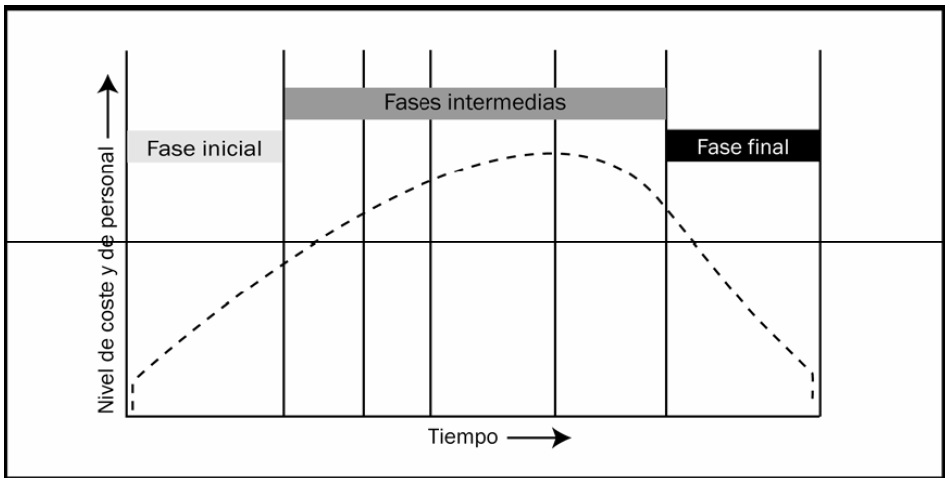

-
Incio(current)
-
Lecturas
-
Multimedia
La profundidad con que se lleve a cabo la planificación y la precisión con que se aliste el desarrollo, dependerá el éxito del proyecto. Evitar los principales riesgos asociados a esta fase es tan importante como aplicar algunas de las mejores prácticas relativas a esos primeros pasos que se dan en un proyecto.
Entre las mejores prácticas aplicables a la etapa de iniciación de todo proyecto se encuentran las que tienen que ver con la adquisición de conocimiento, en base a la información sobre a que será necesario construir, que siempre debe partir de datos objetivos, fiables y contrastados.

Concretamente, la fase de inicio de un proyecto es el momento para llevar a cabo algunas acciones, previa documentación y puesta en común con las partes interesadas:
1. Determinar el propósito del proyecto.
2. Averiguar el porqué del momento escogido para dar comienzo a una iniciativa de este tipo.
3. Identificar las principales ventajas que su consecución aportará a la organización.
4. Conocer quiénes son las partes interesadas en el proyecto.
5. Comenzar a definir roles y niveles de responsabilidad, documentando los requisitos y detalles de la involucración de cada participante.
6. Nombrar al equipo de proyecto, especificando su posición dentro del organigrama, los requisitos de cada posición y sus obligaciones de reporting.
7. Garantizar la disponibilidad de canales y medios de comunicación suficientes.
8. Detectar las principales limitaciones.
9. Identificar los riesgos más importantes.
10. Iniciar el proceso de determinación de la viabilidad del proyecto.
11. Definir el alcance de proyecto y exponer su visión.
12. Revelar la estructura organizativa del proyecto.